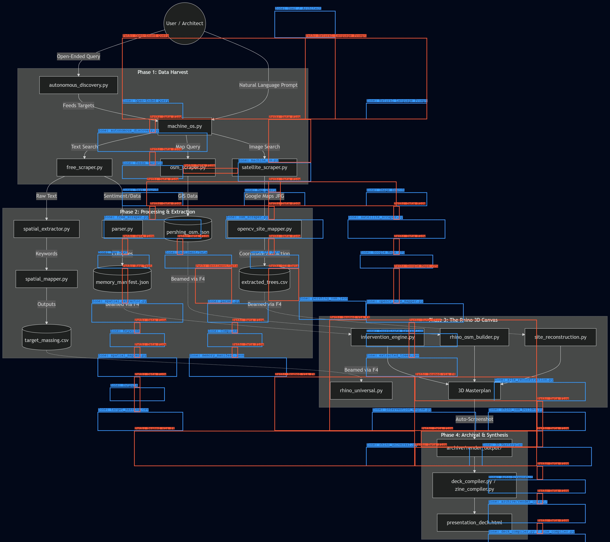
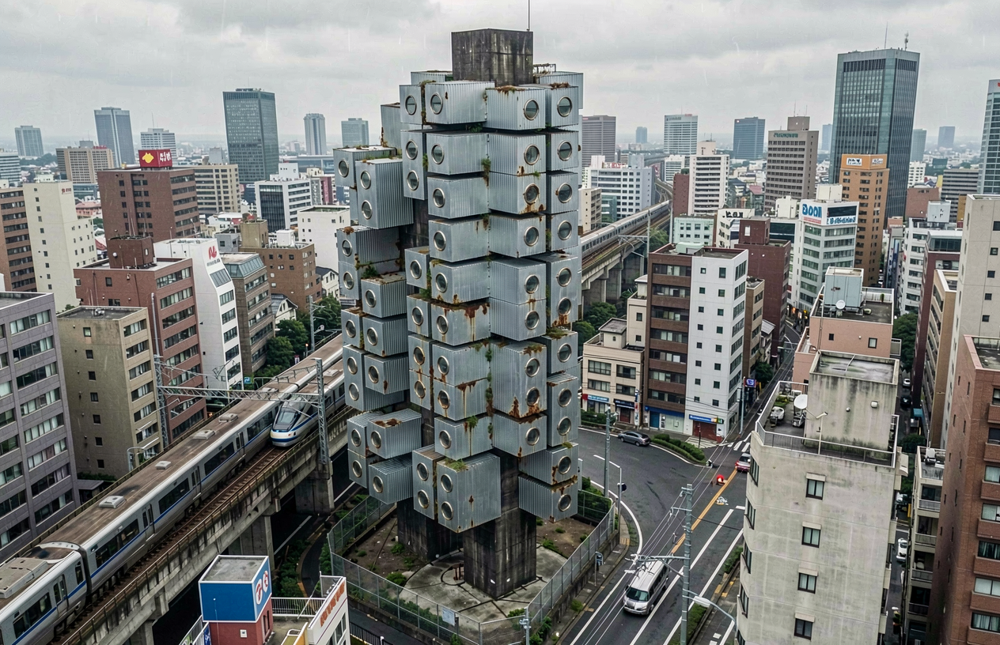
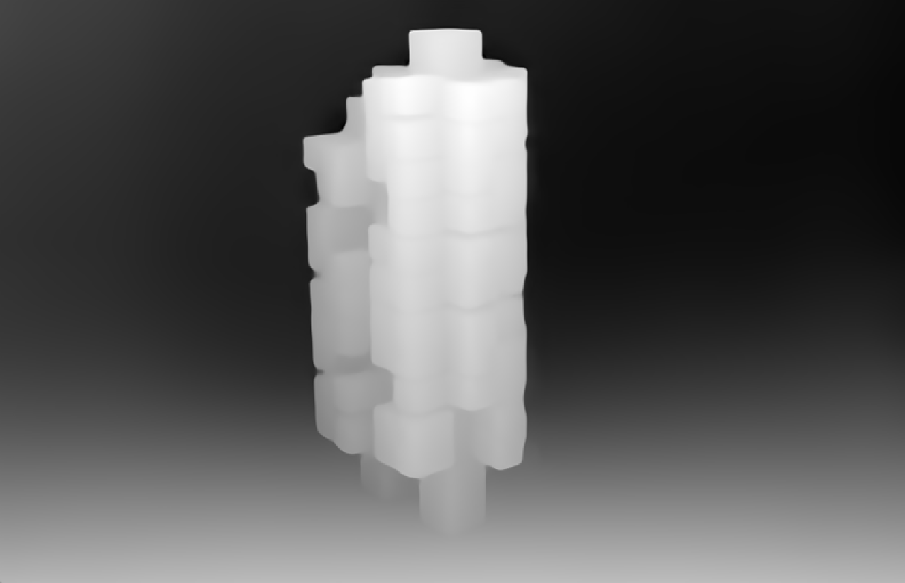
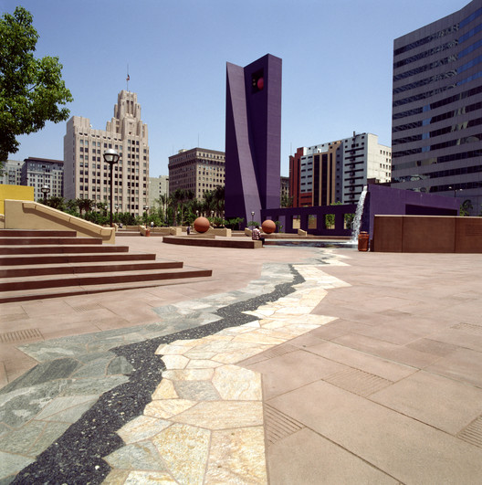
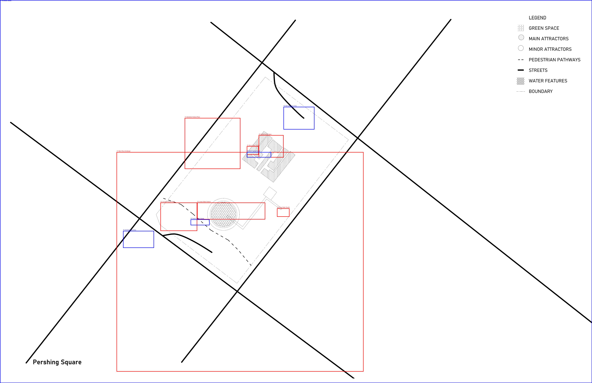
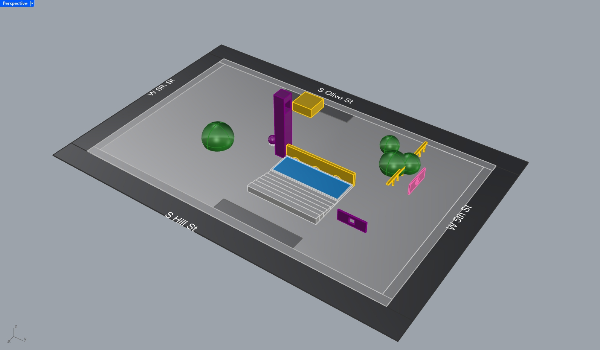

Forensic_Palimpsest
The Memory Machine // John C. Northrup II

The Machine That Forgets
Memory is not a static archive, but an unstable process of encoding, retrieval, and decay; it shifts, collapses, and rewrites itself constantly. In the last decade or so, "artificial intelligence" has been exposed as a reflection of how (our understanding of) memory operates, and within this operation are its inherent biases, fractures, and capacity for curiosity and invention. Among these technologies, LoRAs (Low-rank Adaptations) stand out as scraps of prosthetic memories, compact neural attachments that learn from, and modify larger AI models. Trained on small datasets, LoRAs become vessels of compressed recollection. They remember selectively, absorbing textures, gestures, pen strokes, and patterns that can later be called upon and reactivated. The selective remembering of LoRAs can be thought of as parallel to the neurological condition of dementia within humans. This disease creates a condition of not only forgetting, but a collapsing of the conceptual frameworks that offer contextual clues as to their proper origin. This experience is heart wrenchingly represented in the audio works of The Caretaker in the album/series Everywhere at the End of Everything. The artists' depiction of the unraveling of the structural threads that contain memory is presented in a sonic tour through the architectures of human memory in their most frail and failing moments. It is my intention to bind the logics of machine learning systems, human memory loss, and architectural decay through a shared sense of anxiety over uncertainty. Through readings of Hito Steryl's A Sea of Data: Apophenia and Pattern (Mis-)Recognition this paper will explore how both humans and machines are (not just) capable, but programmed to mistake noise for meaning.
Architectural Memory
Architecture contains memory. Spaces contain memories, old walls are torn down, types of architectural witness marks are left, with tooling marks and bits of material leftovers. Many of these are hidden below the surface, covered by fresh gypsum and spackle, left to only be discovered by the next entity that tears down these walls; finding hidden messages from years ago only to cover them up again with what they've deemed to be the appropriate material, orientation, color, accessory placement or other interventions performed on spaces within their lifespan. We see examples of this even in a city as young as Los Angeles. The easiest example to point to would be the entirety of the SCI-Arc building. Its layers of addition and subtraction repeated countless times has left it with layers of stories. A saturated memory of the palimpsest of information embedded within its walls.
The 110 freeway exhibits stairways to nowhere, the odd remnants of the Belmont (Pacific Electric) Tunnel that once housed the Hollywood Subway. The Bradbury Building reveals its temporal layering through cracked marble floors, patched materials, and the uncanny presence of contemporary fire doors rudely inserted into historic interiors. These collisions of old and new produce moments of dissonance, where architectural time collapses into a single frame. Architecture's role is not merely as a container for memory, but it is also a performative actor. Architecture is not a static thing. It ebbs and flows with time, negotiating nature, destruction, and building codes. Constantly updating itself, gathering new information, morphing into its most recent version, most suitable for whatever its new contemporary context is. Vestiges of previous architectural logic still seep out into the contemporary surface, shifting understandings and contexts as they rise. It is often argued that Los Angeles' architectural ethos exists in a system of forgetting and erasure, but those pieces of the past are never erased. The materials are shifted to other locations, meant for alternative uses (even if that is just in a landfill) but the material can never be fully erased. Only its physical and temporal context has shifted. Old structures are modified and distorted. In the Art's District we find the result of its direct connection to the rail lines of the city's industrial past. Many moments of oddly shaped buildings, wrapped around train tracks with elegant curves, obtuse angles, and extremely long and narrow buildings. Misalignments and forced geometries, blocked in windows that are now structural entities of the building. Memory becomes a spatial constraint, a limitation on the interventions we may deem necessary. These remnants of the past can be seen as an inherited error of the data set. A hole in the boat that must be plugged in order to maintain stability. When a container system breaks down, the result is not absence, but of excess. This failed integrity leads not to emptiness but towards noise, ambiguity, and hallucination. Architecture is guilty of the most apophenic tendencies. Forever imagining. Forever Hallucinating. Constantly working with dirty datasets and incomplete memory. Meaning is not retrieved intact, but inferred. Architects extract meaning where there is none. Design does not emerge from certainty, but from negotiating gaps. Treating degradation as failure leads to two dominant responses. The first is total erasure, demolition, and replacement. The second is rigid preservation, an attempt at perfect recall results in the building being frozen in a simulacrum of completeness, a fabricated condition of wholeness. Both approaches misinterpret memory as something that can be stabilized, or even contained. In practice, memory always leaks.
Machinic Hallucinations
As buildings carry with them these scars and memories of past encounters, LoRAs too contain scraps of data, expressed through incoherent memories and incomplete images. Neural networks reflect the training styles and data sets used to create them. LoRAs operate within a more specific context than a full neural network would, utilizing "frozen" weights and parameters to more efficiently perform a set of tasks. In this sense, we can view LoRAs as an adaptive layer to a neural network; a partial memory that modifies larger systems, much like an architectural intervention or restoration would modify an existing wall. This renovation is the LoRAs' way of fine tuning the original structure without completely demolishing and rebuilding it. Each subsequent dataset becomes an additional layer of memory, adjusting how the system remembers and reproduces visual or linguistic forms. When a LoRA is not trained on enough data, its output is blurry, incoherent, and ghostlike. Images blurred into one another, almost recognizable instances appear, but are not easily remembered due to their uncanniness. The framework is weak, the ability to recollect is reduced to a spectral image. In dementia, a similar collapse occurs. Imagine a bucket of water. This bucket is the container, the water is memories. As dementia progresses, holes begin to form and the bucket begins to leak. The water doesn't evaporate, but it spills out, churning together, lost in a swirl of nonsense, flashes of light and sound, moments decades apart blending together. Similarly to the way a LoRA loses sight of the context of the image it's attempting to create, one who suffers from dementia becomes lost in a sea of static, noise and confusion. The disease breaks down the structure and context of the memories, recollection somewhere between the past and now, but holds no solid place in either temporal space. The mind's vision, much like a poorly trained LoRA's vision, is a blurred canvas where sensing is useless without the structural context to bind itself to for guidance. A machine doesn't recognize what a spoon is until it has been trained on hundreds of images of spoons; and even then, it might still mistake a marker for a spoon. This type of incorrectly categorized mishap often happens with dementia patients, their brains no longer recognize the intended use-case of the object, the object is recognizable as something to hold, but its data that contains its function is no longer there. The data within their training set has been scrambled. The meta data has been misplaced, lost from the image, and the tags that once guided the user to clarity no longer exist.
Noise. Lines. Color patterns.
In Hito Steyerl's writing A Sea of Data, she argues that in a world overflowing with digital noise, apophenia becomes a strategy of survival as well as a mechanism of control. Her brilliant introduction not seeing anything intelligible is the new normal reflects a lot of my own perceptions of life since 2015. Each of our senses completely overwhelmed, our perception of life begins to liken itself to that of a record that has been used so often that it has worn through the grooves until all we are left with is static. Static is not nothing. Audible static, visible static, noise, is all information in one way or another. It can be interpreted and manipulated. Neural networks are designed with apophenic tendencies. They recognize patterns where there are none to be found; they find patterns in randomness, logic in illogical places. They are programmed to find patterns where patterns do not exist.
Architectural Apophenia
Architects find possibility within piles of rubble just the same as they find pattern within highly-detailed parametric facades that are intended to appear random. If apophenia is the tendency to mistake noise for meaning, architecture is one of its most institutionalized forms. Architects rarely work from complete information; instead, they reinterpret remnants, partial drawings, zoning artifacts, infrastructural scars, historical traces, constructing coherence from what is missing or misaligned. Architectural practice already operates within the same apophenic logic as neural networks trained as incomplete datasets. The difference is not whether patterns are misrecognized, but how those misrecognitions are framed: as error to be erased, or as latent structure to be worked through.
Everywhere at the End of Time
I came across an album during the pandemic by an artist called The Caretaker which was produced by James Leyland Kirby and they did extensive research and interviews with patients and family members of dementia victims. Dementia is not necessarily a symptom of forgetting but of the containers that hold and label the memories begin to break down. Past encounters, of people, object, and architecture begin to mix together in a soup not defined by temporal or spatial limitations. Objects and people aren't forgotten, but their context is. As this 6-hour collection of tracks plays, it slowly morphs from calming static-y jazz to unrecognizable noise. The notes begin to warble and fall apart. They lose their fidelity until they become an unrecognizable image. By the time the album reaches the final tracks, the sonic landscape becomes otherworldly, somewhere akin to sitting on a celestial beach listening to the humming of the universe while watching a final sunset.
This audible landscape shifts from warm and fuzzy nostalgia into a barren, cold landscape. Notes from the previous tracks sometimes float back up to the surface in a last attempt to be heard one last time before sinking back below the surface of a static and drone sea. This condition has overtaken the original memory. Its temporal location stretched and skewed until it is no longer recognizable for what it used to be. The droning noise, the static is not nothing. There is still information here. An audible sense of movement, of some sort of structure within the frameworks of these drones. The real nothingness is the silence that follows the end of the record. The final track stops and we are made powerfully aware of that silence. The Caretaker's work operates not merely as a representation of dementia, but as a constructed system of degraded memory. Its progression mirrors the failure modes of both LoRAs and architectural palimpsests. Early clarity gives way to repetition, compression, and distortion. Fragmentations resurface without context and the structure persists longer than meaning. Like a poorly trained LoRA, the album continues to generate output even as its internal framework collapses. Like architecture under numerous successive interventions, it never returns to silence, only noise to be reconfigured. In this sense, the album serves as a sonic architecture of memory decay, one that reveals how structure can persist even after legibility is lost.
Architectural Noise
This journey through the stages of memory decay can be likened to that of architectural decomposition. A structure is typically built with a specific function in mind; a tower, an elevated railway, a hospital, a freight depot. However, as these structures begin to age, so do their functions. Architectural advancements call for drilling through facades, routing wires along cornices and molding, mounting cameras on every corner. The building is constantly modified and updated, while the structure remains the same. In many cases, a building's function requires a drastic overhaul. The spaces are gutted, the shell hardly even remains; yet the memories inside float freely with a loosened context. The graffiti in SCI-Arc that still remains embedded into the walls is an example of this contextual palimpsest. The walls built for a freight depot; once clean and new, were put through years of use and abuse during the height of Los Angeles' industrial age. For decades this structure stood as a fixture of the industrialization of commodities, a hub for rail lines that stretched out across the United States. After the industrial age, the building was eventually abandoned, leaving it free to the community to modify to meet their needs and desires. The context once again is shifted. Pieces of the building are stripped away over time, the tracks that once connected it to the outside world were ripped out, fences were installed, the building lay gutted, its former context removed, yet the memories still remain. Spray paint, scarred concrete columns, fading numbered window bays all point out the architectural palimpsest that has been generated within the building.
Long Decline is Over
Noise is not Nothing. It is the initiating generative information that can produce images, often where there is no image to start. Steyerl describes a leaked image from Edward Snowden which might express an apophenic condition that could be interpreted as a digital sea, waves over a calm sea, when there is no sea in sight. Once decrypted, this image reveals a picture of clouds in the sky; likely taken from IDF drone footage sometime in 2008. Noise is not nothing. It disguises, masks, distorts and is base material for creation. Just as the molecules of air around us become more obvious during a dust storm; the wind patterns and maneuvers become more obvious to a viewer. Even without the dust, air is not nothing. There is information in static, in drone, in white noise. This information changes the way we interact with the world around us. It influences our lives in ways we so often are not even aware of. The static of an old record might initially be a calming, nostalgic sound, but once that record plays itself out until the grooves are worn down so much that the static overtakes the original recording, the static takes on a new role. There is uncertainty, and anxiety in the amount of noise being generated. While the same information is still present, the context is lost, buried under noise. This same noise that once brought about a sense of calm and nostalgia now brings with it a sense of confusion. The pattern no longer recognizable, we fear what lays beneath its encryption. We look for patterns in this data, but not even the false sense of security that comes from apophenia can save us. We are lost in the collapse of structure as the noise of ambiguity overtakes us.
Laying amidst its own rubble and decay, the building became noise. In the midst of this time of abandonment — the building was far from abandoned, it simply was given a function by the community that didn't quite fit the bounds of what society deemed proper — the structure persisted. The material can never be fully erased. Only its physical and temporal context has shifted. This is the condition of the palimpsest: not erasure, but accumulation. Not forgetting, but overwriting. The Memory Machine is built on this principle.
 A Frame Swingset
A Frame Swingset
 Brass Trim
Brass Trim
 Carpet Orange
Carpet Orange
 Incandescent Glow
Incandescent Glow
 Monster Truck
Monster Truck
 Vinyl Brass Table
Vinyl Brass Table
 Vinyl Top
Vinyl Top
 Wood Panel
Wood Panel
The Demarcation: A short chain link fence, maybe 4 feet high. It never had a sense of authority or security; it was merely a demarcation of a boundary to keep a child from walking into the street.
The Playground: A small yard with wide, scratchy blades of green grass. The lawn terminated roughly around the roots of a large tree where the dirt became the primary site of play.
The Winch: A large blue monster truck, a dead RC car used as a static prop. The coolest part was the manual winch at the front, used to pull toy soldiers out of the dirt by the tree.
The Interior Palette: A saturation of 70s and 80s tones — burnt orange, moss green, and deep brown. The living room was dominated by an orange/green/brown shag carpet.
The Kitchen Artifact: In the north window sat a potato propped up by toothpicks in a glass jar, propped up so the roots could reach down into the water.
The Hallway Logic: Three sequential doors on the right side of a narrow wood-paneled hall. First a coat closet, then the bathroom, then a bedroom containing a playpen.
The Perpendicular Tub: A white porcelain bathtub oriented towards the south end of the bathroom, sitting perpendicular to the long axis of the trailer.
{
"node_id": "MM-01",
"iteration": "1988_TRAILER_V3",
"geo_lock": {"lat": 36.8252, "lon": -119.7029},
"dimensions": {"unit": "feet", "length": 60, "width": 12, "height": 8.5},
"chromatic_palette": [
{"material": "wood_panel", "hex": "#3d2b1f"},
{"material": "carpet_shag", "hex": "#a34b25"},
{"material": "vinyl_kitchen", "hex": "#e8e4d9"}
],
"spatial_logic": [
{
"zone": "exterior",
"elements": ["fence_chainlink", "tree_play_radius", "trailer_hitch"]
},
{
"zone": "interior",
"elements": ["vignette_potato_jar", "vignette_blue_swingset", "sequential_hall_doors"]
}
]
}
[ 1988_TRAILER_RECONSTRUCTION_V3 ] 01001110 01001111 01010010 01010100 01001000 01010111 01001111 01001111 01000100 01010111 01000010 01010010 01000001 01010011 01010011 01010110 01001001 01001110 01011001 01001100 01010000 01001111 01010100 01000001 01010100 01001111 01010010 01000001 01001110 01000111 00110001 00111001 00111000 00111000 01011111 01010100 01010010 01000001 01001001 01001100 01000101 01010010 00101110 01101100 01101111 00110011 00110110 00101110 00111000 00110010 [ END_STRATA ]


[NARRATIVE FRAGMENT // 1992_BIRTHDAY]
September 28, 1992. Grandmother's mobile home, Fresno area. A candle-lit room where the geometry of the space fades into a soft blackness at the edges.
A specific, warm interiority. The focal point is the cake: a blue monster truck track complete with a checkered flag and four small candles.
[DATA CORRUPTED] The flickering light. A sentimental atmosphere. The soft hum of a memory held in place by sugar and wax.
{
"memory_node": "1992_birthday",
"reconstruction_confidence": "0.92",
"sensory_data": {
"visual": "Candlelight, soft black edges, blue frosting, checkered flag, mobile home interior",
"auditory": "Hushed singing, faint static",
"olfactory": "Wax, vanilla, sugar",
"emotional": "Deep sentimentality, warmth, safety"
},
"spatial_logic": "Enclosed room, boundaries dissolving into darkness, focal point centered on table.",
"narrative_coherence": "High. Strongly anchored by the cake artifact."
}
[BINARY DATA FOR 1992_BIRTHDAY] 01000010 01101100 01110101 01100101 00100000 01010100 01110010 01110101 01100011 01101011 01010011 01000101 01001110 01010011 01001111 01010010 01011001 00111010 00100000 01000011 01000001 01001110 01000100 01001100 01000101 01010111 01000001 01011000 00100000 00101111 00101111 00100000 01010011 01010101 01000111 01000001 01010010 00001101 00001010 01001111 01000010 01001010 01000101 01000011 01010100 00111010 00100000 01000010 01001100 01010101 01000101 00100000 01001001 01000011 01001001 01001110 01000111 00100000 01000011 01001000 01000101 01000011 01001011 01000101 01010010 01000101 01000100 00100000 01000110 01001100 01000001 01000111 00001101 00001010 01000011 01001111 01001110 01010100 01000101 01011000 01010100 00111010 00100000 01000110 01010010 01000101 01010011 01001110 01001111 00100000 01001101 01001111 01000010 01001001 01001100 01000101 00100000 01001000 01001111 01001101 01000101

[NARRATIVE FRAGMENT // 1994_BASIN]
1994. A rental home in the Clovis area. Roughly an acre of land, including a ponding basin and a horse corral for dressage.
Learning to ride a bike on the dirt. The feeling of being small in a large landscape.
[DATA CORRUPTED] Near-disaster. A stuffed raccoon placed on top of a hot lampshade. Smoke rising. The smell of singing synthetic fur.
{
"memory_node": "1994_basin",
"reconstruction_confidence": "0.74",
"sensory_data": {
"visual": "Open acre, horse corral, dust, bicycle, glowing lamp, smoke",
"auditory": "Wind in the basin, bicycle tires on dirt, alarm",
"olfactory": "Dust, horse hay, burning synthetic fur",
"emotional": "Freedom mixed with sudden panic"
},
"spatial_logic": "Exterior expanse vs interior danger. The basin loop vs the hot lamp.",
"narrative_coherence": "Oscillating. Calm exterior, chaotic interior."
}
[BINARY DATA FOR 1994_BASIN] 01010010 01100001 01100011 01100011 01101111 01101111 01101110 00001101 00001010 01001100 01001111 01000011 01000001 01010100 01001001 01001111 01001110 00111010 00100000 01000011 01001100 01001111 01010110 01001001 01010011 00100000 01010000 01001111 01001110 01000100 01001001 01001110 01000111 00100000 01000010 01000001 01010011 01001001 01001110 00001101 00001010 01001000 01000001 01011010 01000001 01010010 01000100 00111010 00100000 01000010 01010101 01010010 01001110 01001001 01001110 01000111 00100000 01010011 01011001 01001110 01010100 01001000 01000101 01010100 01001001 01000011 00100000 01000110 01010101 01010010 00001101 00001010 01001111 01000010 01001010 01000101 01000011 01010100 00111010 00100000 01001000 01001111 01010100 00100000 01001100 01000001 01001101 01010000 01010011 01001000 01000001 01000100 01000101


The Persistent Artifact: Rossi, Gandy, and the Collective Automata
In the Rossian view, the city is a theater of human events. Architecture is not merely a functional container but a "primary element" — a permanent artifact that survives the functions for which it was built. These artifacts are the repositories of collective memory; they are the fixed points around which the chaos of the city revolves. But what happens when the artifact is not a marble monument in Milan, but a transient trailer in Green Acres?
The Memory Machine operates at the intersection of Joseph Gandy's forensic ruins and Aldo Rossi's urban archetypes. While Gandy provided the visual language of the "cutaway" to reveal the hidden layers of structure, Rossi provides the philosophical justification for the project's obsession with domestic typologies. To Rossi, memory is the thread that binds the individual to the collective. In this zine, the 1992 mobile home and the Clovis rental are treated as "Urban Artifacts" of the Central Valley — singular forms that persist in the mind long after the lease has ended or the wheels have moved.
By proceduralizing these sites through Python scripts and Blender's generative nodes, we are not just modeling houses; we are constructing a Collective Automata. We are testing the "persistence" of these spaces. The glitchy, smudged palimpsest of the render is a digital manifestation of Rossi's analogous architecture — a process where memory, place, and history are filtered through an individual's consciousness until they become a new, "true" reality.
These images represent an architecture that is stripped of its immediate utility and returned to its status as a monument of the everyday. Like Soane's Bank viewed as a ruin, these domestic memories are excavated to find the "skeleton" of the self. They are a testament to the fact that the architecture of our past is never truly demolished; it remains as a permanent artifact within the machine of our own remembrance.


Primary Sources
Steyerl, Hito. "A Sea of Data: Apophenia and Pattern (Mis-)Recognition." e-flux, no. 72 (April 2016).
Fisher, Mark. "The Weird and the Eerie." Repeater Books, 2016.
Kirby, James Leyland (The Caretaker). "Everywhere at the End of Time." History Always Favors the Winners, 2016–2019.
Secondary Sources
Pasquinelli, Matteo. "The Automaton of the Anthropocene: On Carbosilicon Machines and Cyberfossil Capital."
Bratton, Benjamin H. "The Stack: On Software and Sovereignty." MIT Press, 2016.
Technical References
Stable Diffusion Documentation (v1.5). Stability AI.
LoRA: Low-Rank Adaptation of Large Language Models. Hu et al., 2021.
Archival Assets
Family Archives (1988–1994). Northrup Collection.
A computational design project exploring the intersection of human memory decay, artificial intelligence, and architectural reconstruction.
This repository contains the logic for procedurally reconstructing memories, harvesting digital artifacts, and compiling a digital palimpsest. It is in this translation where gaps in memory and translational glitches begin to produce new architectural elements.
Memory is not a static archive, but an unstable process of encoding, retrieval, and decay; it shifts, collapses, and rewrites itself constantly. In the last decade or so, artificial intelligence — LoRAs, hallucinations — has been exposed as a reflection of how memory operates, and within this operation are its inherent biases, fractures, and capacity for curiosity and invention.
The project moves outward from the intimate scale of personal domestic memory toward the collective scale of the city. If the first half of the project locates memory in the body and the childhood home, the second half tests whether that same logic holds when applied to shared urban artifacts: a grand restaurant, a metabolist tower, a contested public square.
Each site is processed through the same pipeline. Yelp reviews and archival data are scraped and transformed into qualitative memory fragments. These fragments are converted into binary strata — quantitative spatial parameters — and fed into a generative model that reconstructs the space as a hallucination. The resulting render is neither the original space nor a faithful reproduction. It is a palimpsest: a memory contaminated by the noise of a machine that has never been there.

Bottega Louie
Bottega Louie is a high-end patisserie and restaurant situated in the historic Brockman Building in Downtown Los Angeles.
It was chosen as a primary case study because its cavernous, marble-clad interior acts as an acoustic and visual echo chamber. The space relies heavily on sensory excess — from vibrant macarons to reverberating noise — to construct its identity.
This makes it an ideal testing ground for extracting atmospheric, qualitative memories and translating them into rigid, quantitative architectural geometry. The marble floors, vaulted ceilings, and open layout produce a memory that is inseparable from its material and acoustic properties. The space is remembered through sensation before it is remembered through form.
The Brockman Building itself carries its own palimpsest — constructed in 1912, it has passed through multiple commercial lives before arriving at its current identity as a luxury dining destination. The architecture persists. The function is overwritten. The memory leaks through both.


Nakagin Capsule Tower
The Nakagin Capsule Tower in Tokyo, designed by Kisho Kurokawa, is a rare built example of the Japanese Metabolism movement.
It was intended to be a living, organic structure with interchangeable cellular pods, but instead fell into a state of permanent decay and eventual demolition.
It is relevant to the Memory Machine because its strict, algorithmic modularity directly mirrors computational architecture. The tower serves as a physical palimpsest, capturing the tension between utopian technological ideals and the reality of urban entropy.
Each capsule was designed as a discrete, replaceable unit — a memory cell with a fixed interface. In practice, no capsule was ever replaced. The replacement logic was never executed. The structure aged as a whole, carrying the weight of an unfulfilled system. This mirrors the condition of a LoRA trained on an ideal that never manifested: the model learns a pattern that has no corresponding reality. The output is haunted by a future that never arrived.



Pershing Square
Pershing Square is a historic five-acre public park in the heart of Downtown Los Angeles that has undergone constant demolition and redesign over the last century.
Most recently defined by Ricardo Legorreta's bold, postmodern geometric interventions in 1992, the site is currently being erased once again.
It was selected as the final masterplan site because it represents the ultimate urban palimpsest. The site's continuous overwriting of physical form perfectly embodies the unstable, shifting nature of both human and machine memory.
Unlike the personal memory nodes of Part I, Pershing Square is a site of collective memory — contested, publicly legible, and repeatedly overwritten by institutional will. Each redesign is a new LoRA trained on the previous version's data, generating a new image from incomplete and corrupted inputs. The Legorreta intervention — with its purple campanile, bold stucco geometries, and elevated ground plane — became itself a memory to be overwritten. The site never fully forgets. It leaks.


